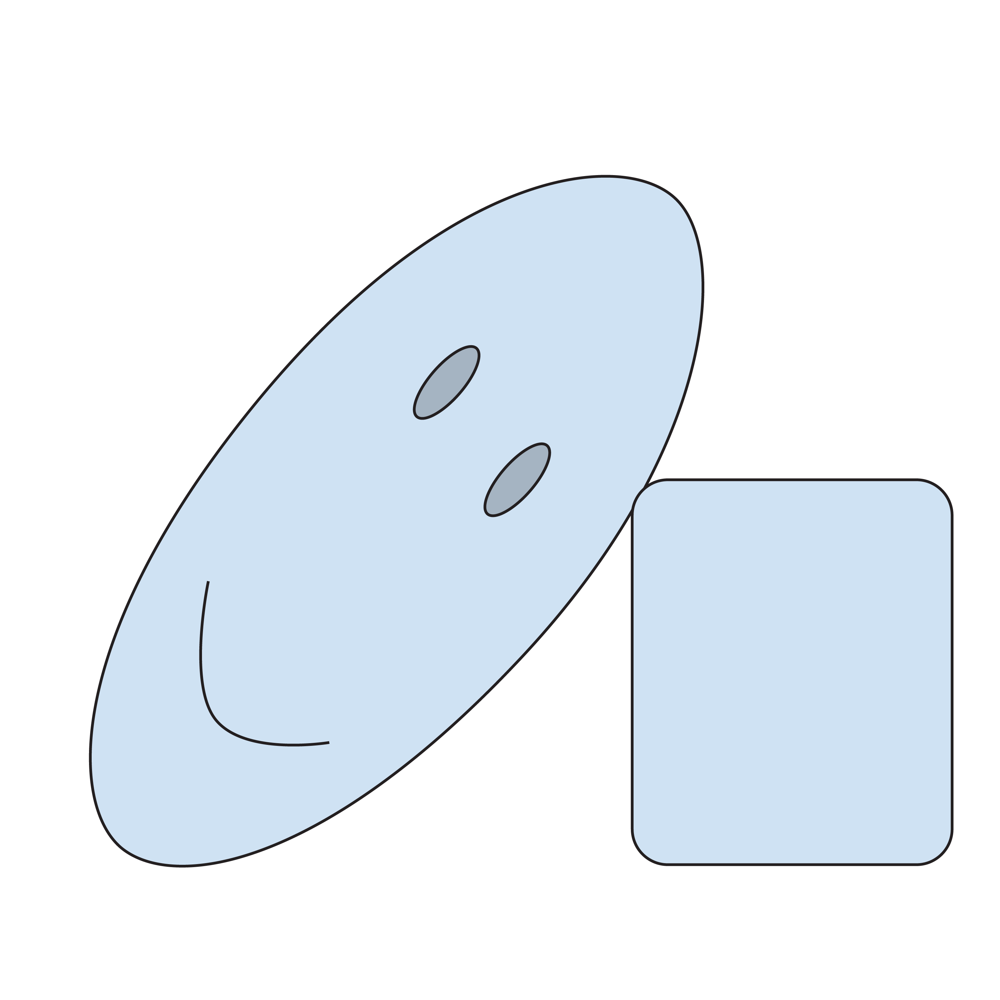
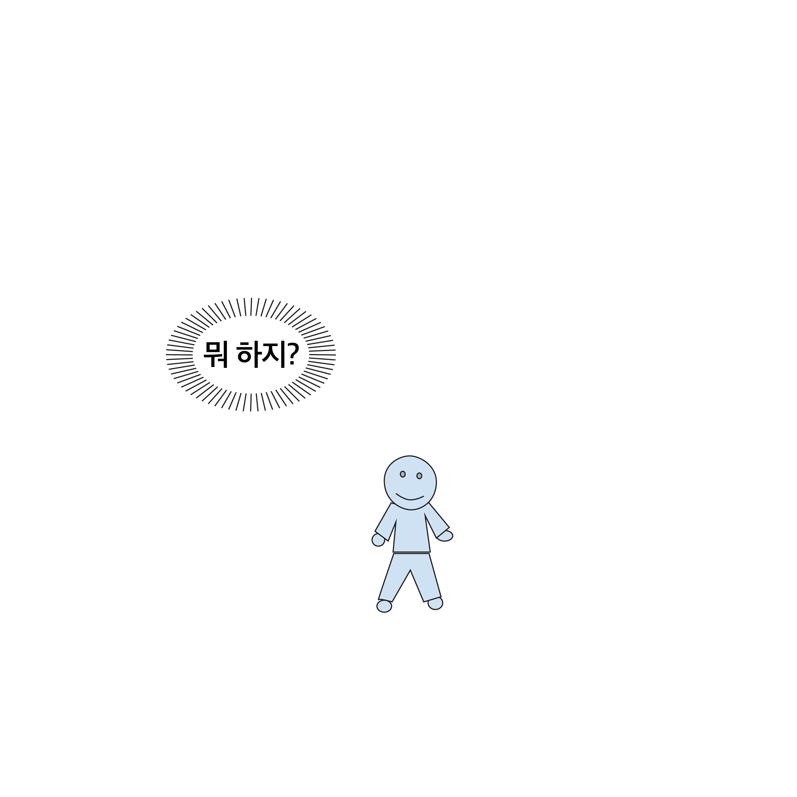
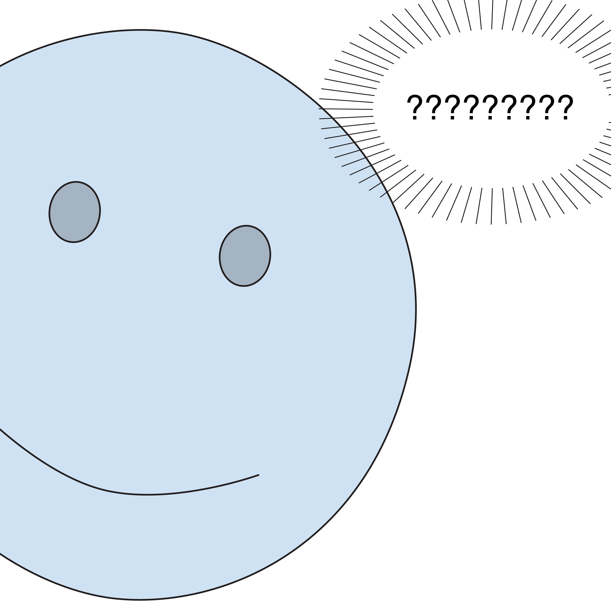
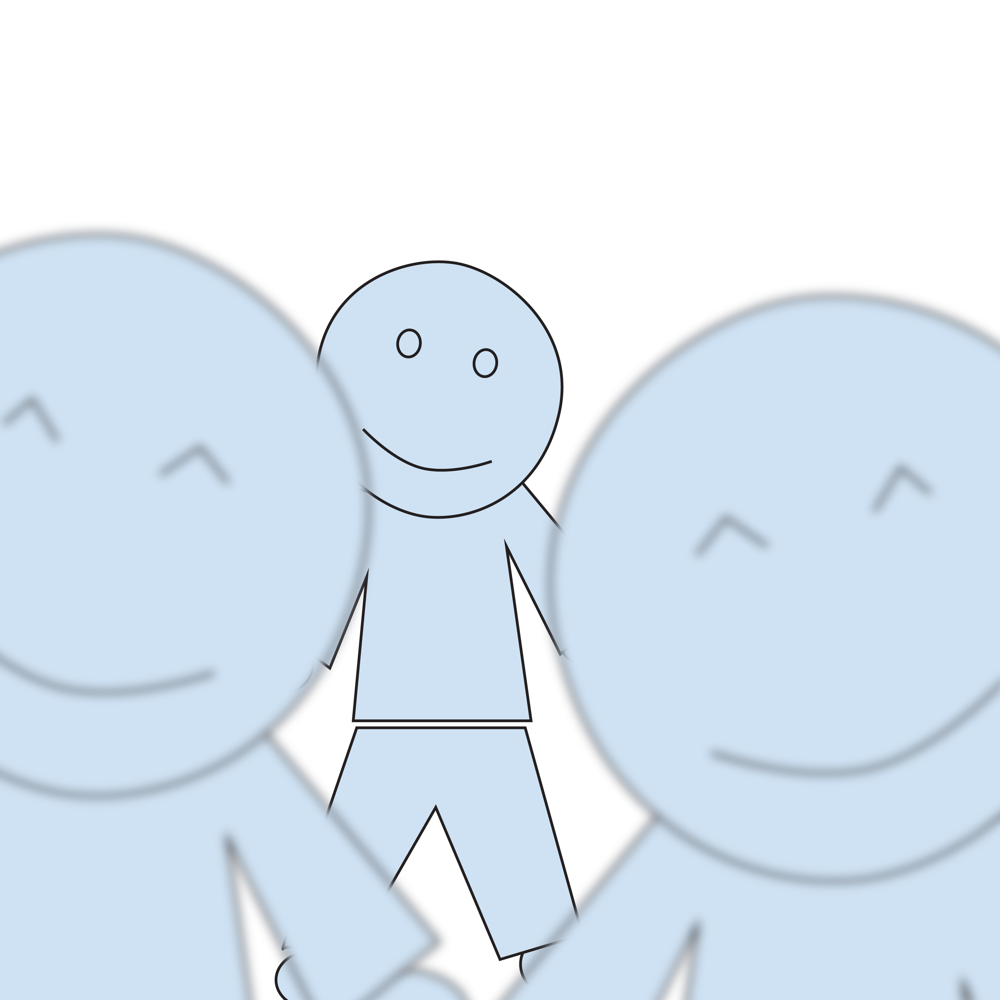

방학동안 매주 토요일에 일어나 영어 수업을 들으러 갔다.
아침잠이 많아 일찍 못일어났던 나는 돈이 일어나게 해줬다.
새벽6시에 일어나 터덜 터덜 버스를 타는게 일상이었다.
학원에 도착하면 너무 일찍 도착해 혼자 덩그러니 앉아 있는게 일상 (그마저도 직원분이 일찍 와야 가능했다ㅜ)
수업내용은 진짜 개 어려워서 집중해도 얼타는게 일상이었다....
학생때는 다 그렇다고 다독여주던 선생님께 정말 감사하다...
수업을 다 들은 후에는 혹시라도 까먹을까봐 카페에서 매번 복습까지 하면서 열심히 했던 겨울방학..
(세상 혼자 있는 기분..)
고생했지만 고생한 만큼 얻어가는게 많길 바라면서 겨울짤 일기 끝!